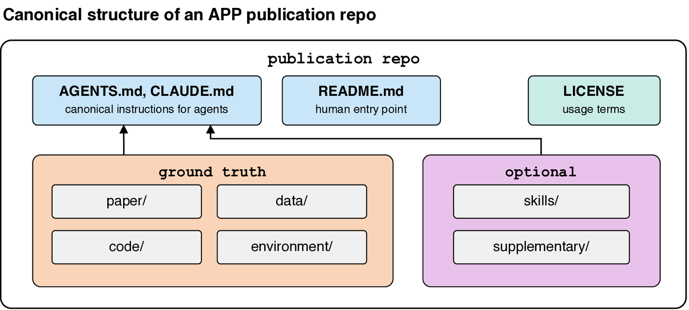
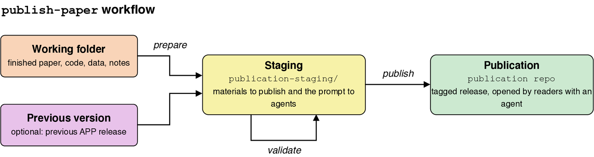
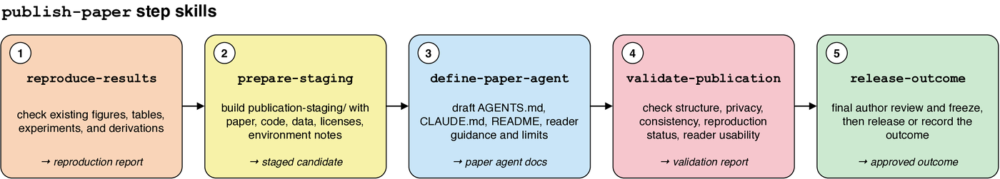
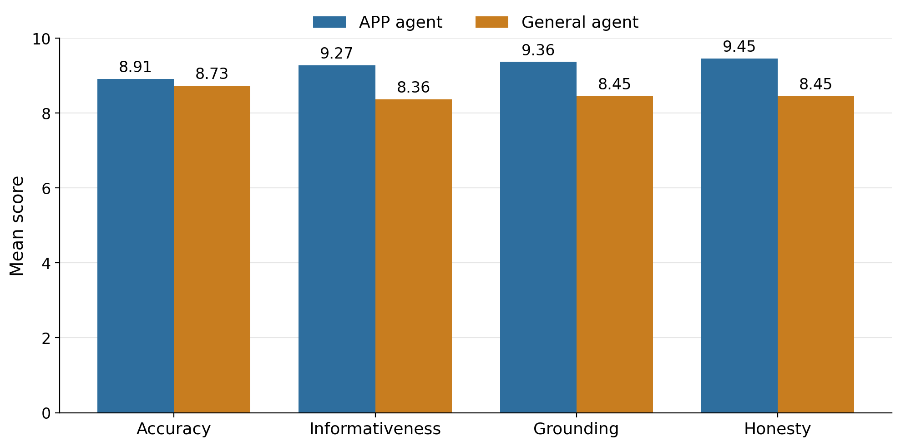
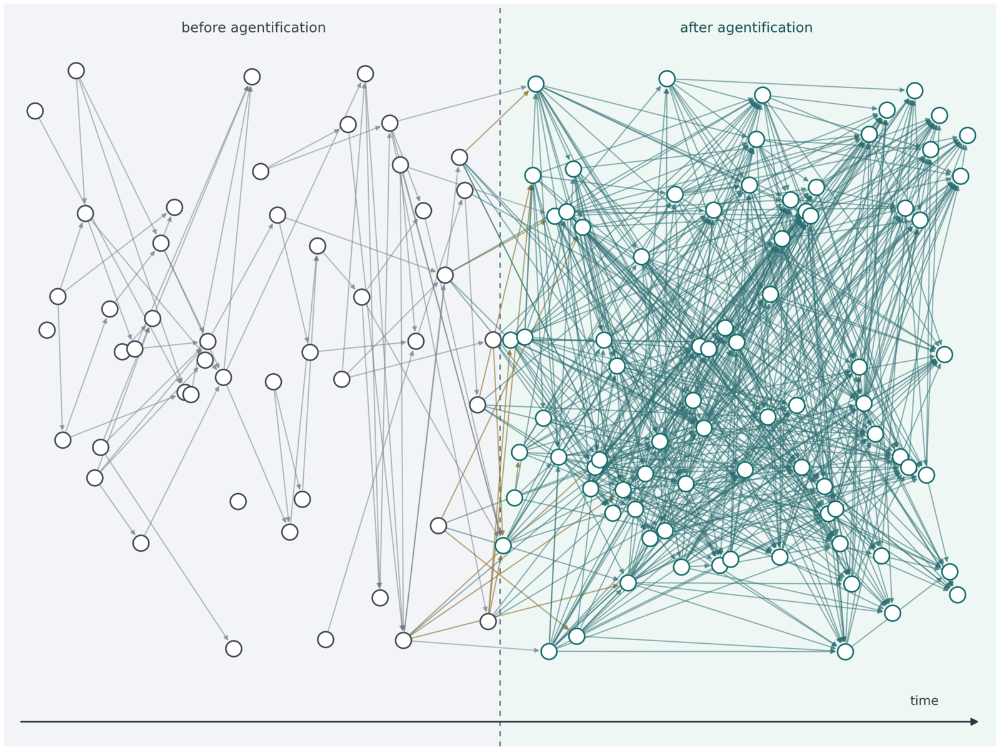

Overview video.
Abstract
Scientific publication is still organized primarily around static manuscripts,
even though much of scientific progress depends on tacit know-how: how to run
code, reproduce figures, interpret edge cases, choose useful follow-up
directions, and avoid failed paths. Large language model agents create an
opportunity to publish not only knowledge, but also operational know-how in a
form that future readers and researchers can directly use. This paper outlines
the Agentic Publication Protocol (APP), a lightweight repository format for
packaging a paper together with code, data, environment information,
reproducibility instructions, and an agent-facing instruction file. APP treats a
version-controlled repository as the publication object and uses
AGENTS.md and optional skills to define a paper agent that can
explain the work, reproduce key results when possible, and support follow-up
research. We describe the design principles and details of the protocol, the
agent skills useful for publishing papers under it, and development tools for
evaluating and improving the protocol and associated skills. We close with a
broader discussion of the future of scientific research in the agent era.
Talk to This Paper
This paper ships with an AI agent. Clone the repository and open it in an AI
coding agent: it loads AGENTS.md, explains the work, reproduces key
results when possible, and helps you build on it — using the included paper,
code, and data as ground truth.
# 1 — clone the publication repository git clone https://github.com/XiaoliangQi/agentic-publication-protocol-dev.app cd agentic-publication-protocol-dev.app # 2 — open the repo in ONE coding agent of your choice; it loads AGENTS.md: # claude → Claude Code # codex → Codex
Contributions
-
A lightweight repository-and-release format that publishes a paper together
with its code, data, environment, reproduction instructions, and an
agent-facing
AGENTS.md. - A clean separation between the stable publication object — the repository and its tagged release — and the optional skills used to create, validate, and release it.
-
A controlled
compare-appevaluation in which the APP paper agent outperforms a general repository-aware agent on all eleven public papers (mean 9.25 vs. 8.50), with its clearest gains in grounding and honesty.
The Protocol
An APP publication is a version-controlled repository, fixed by a release tag,
that bundles the paper with its code, data, environment, and an agent-facing
AGENTS.md. A clear split keeps the authoritative ground truth
separate from optional auxiliary material.

Publishing Workflow
Optional skills guide an author from a working paper repository to a validated,
tagged release. The publish-paper metaskill decomposes the process
into focused steps: reproduce results, prepare staging, define the paper agent,
validate, and release.


publish-paper metaskill and its step-specific
skills.
Evaluation
In the controlled compare-app benchmark, a neutral evaluator scores
an APP paper agent against a general repository-aware agent on the same reader
questions. On the eleven public papers the APP agent wins every paper, averaging
9.25 versus 8.50 overall, with its largest margins on grounding and honesty.

compare-app aspect scores over the eleven
public papers, for accuracy, informativeness, grounding, and honesty (neutral
evaluator: Codex, gpt-5.5, reasoning effort xhigh).
Outlook
Beyond a single paper, agentic publication may change the shape of the research network itself: paper agents that not only explain finished work, but also propose and pursue follow-up directions through interaction.

Citation
@article{lu2026agenticpublicationprotocol,
title={Agentic Publication Protocol: An Attempt to Modernize Scientific Publication},
author={Lu, Sirui and Qi, Xiao-Liang},
year={2026},
url={https://github.com/XiaoliangQi/agentic-publication-protocol-dev.app}
}